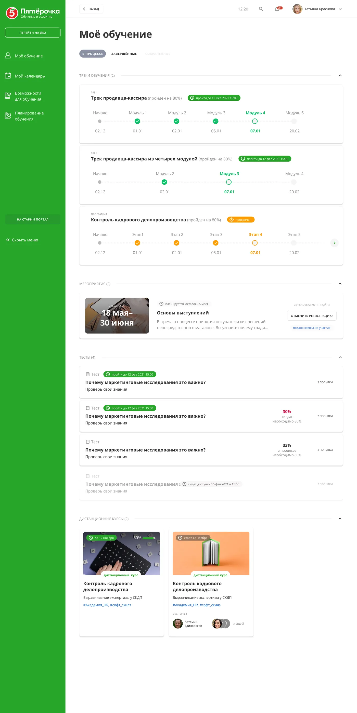
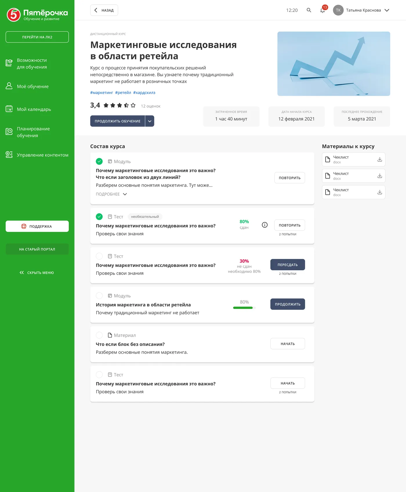
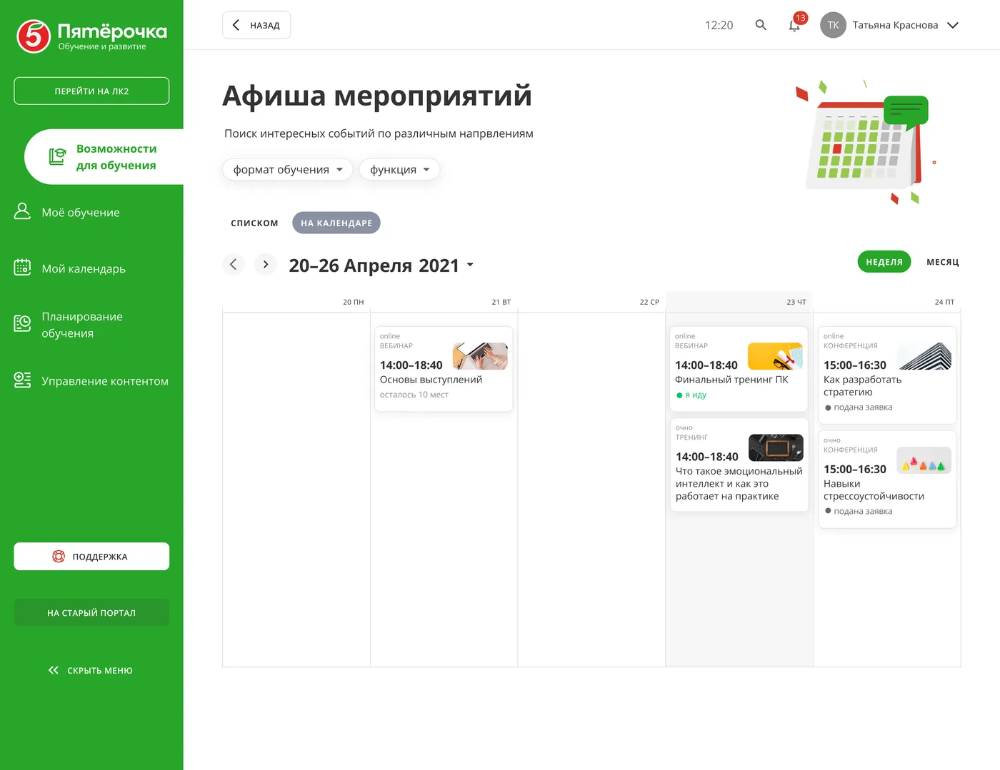
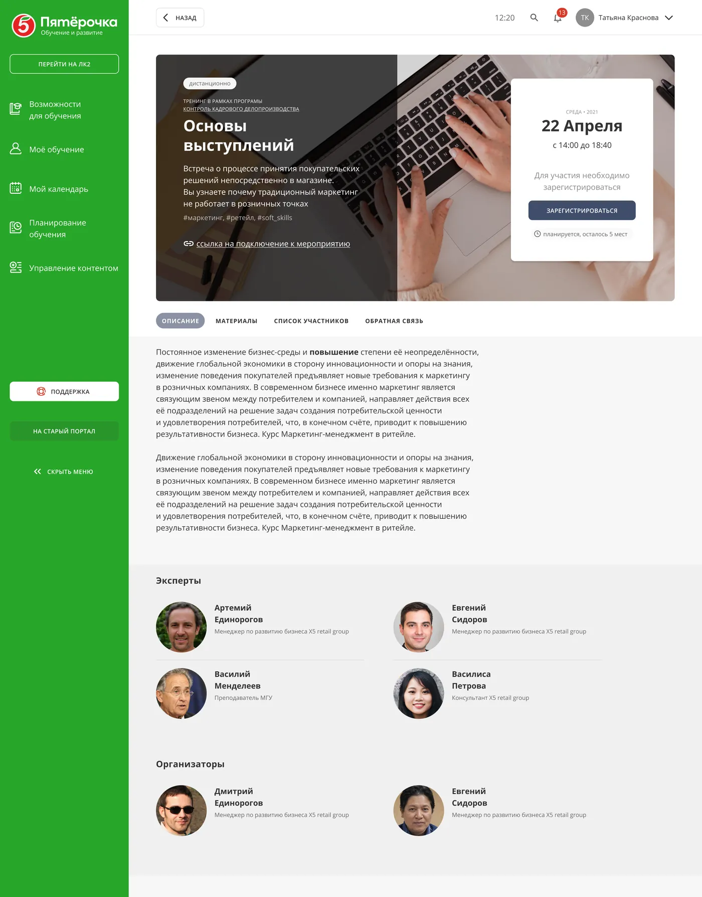
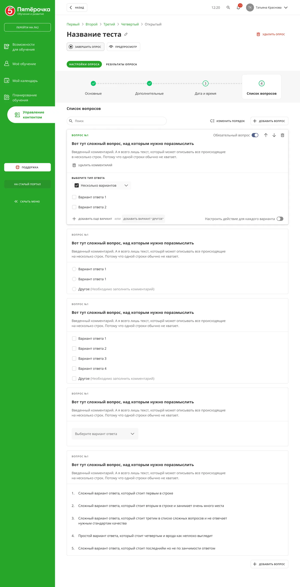

Провела редизайн обучающего портала X5 за год — платформы, где сотрудники проходят курсы, записываются на мероприятия и отслеживают собственный прогресс обучения. Редизайн повысил ключевые метрики как для рядовых сотрудников, так и для менеджеров обучения, ответственных за программы развития персонала.
Параллельно руководила командой из двух дизайнеров при рефакторинге дизайн-системы для HR-сервисов компании — это был отдельный трек, обеспечивающий согласованность паттернов между несколькими внутренними продуктами.




